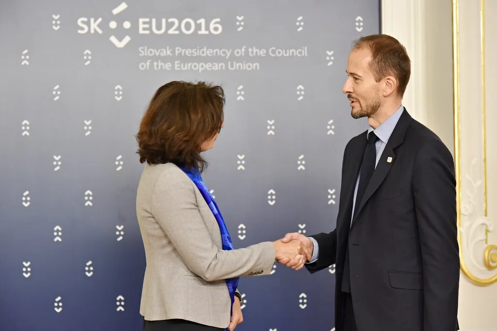

왕이 中 외교부장 5년 만에 방한…한중 외교장관회담 개최
왕이 중국 공산당 중앙외사판공실 주임 겸 외교부장이 19일부터 20일까지 한국을 공식 방문한다. 왕 부장이 양자회담을 목적으로 방한하는 것은 2021년 9월 이후 약 5년 만이다. 외교부에 따르면 왕 부장은 19일 오후 조현 외교부 장관과 회담을 갖고 이어 공식 만찬을 함께한다. 20일에는 이재명 대통령을 예방할 계획인 것으로 알려졌다. 중국 외교 사령탑의 이번 방한은 양국 관계가 새로운 국면에 접어들었음을 상징적으로 보여주는 일정으로 평가된다.
이번 한중 외교장관회담은 지난해 9월 베이징에서 열린 회담 이후 11개월 만에 성사됐다. 두 장관은 이날 회담과 만찬을 통해 양국 관계와 한반도 정세, 지역 및 국제 문제 등 상호 관심사에 대해 폭넓게 의견을 나눌 예정이다. 외교부는 이번 방한이 오는 11월 중국 선전에서 열리는 아시아태평양경제협력체(APEC) 정상회의를 앞두고 그간의 한중관계 "전면 복원" 성과를 점검하고, 다음 단계 협력과 고위급 교류 준비를 본격화하는 계기가 될 것이라고 설명했다. 외교부는 이번 회담이 실무 차원의 현안 점검을 넘어 향후 양국 정상 간 교류 일정을 조율하는 데도 중요한 발판이 될 것으로 기대하고 있다고 덧붙였다.

내년이 한중수교 35주년을 맞는 해라는 점도 이번 회담의 무게를 더한다. 외교가에서는 양국이 각자 선언한 관계 "전면 복원"을 바탕으로 경제·인적교류 등 다방면에서 협력을 강화하고 관계를 발전시키는 방안이 집중적으로 논의될 것으로 보고 있다. 특히 고위급 교류 일정 조율이 이번 회담의 핵심 의제 중 하나가 될 것이라는 관측이 나온다.
이번 방한은 이재명 대통령이 지난 15일 광복절 경축사에서 한반도 종전을 위한 다자간 논의를 제안한 직후 이뤄진다는 점에서도 주목받는다. 외교부 당국자는 이 대통령이 제시한 한반도 평화 구상에 대한 논의가 이번 회담에서도 자연스럽게 이어질 것으로 예상된다고 밝혔다. 최근 미국이 한미 연합훈련 축소를 시사하는 등 한반도를 둘러싼 외교 환경이 빠르게 움직이는 가운데, 왕 부장의 방한이 관련 논의에 어떤 영향을 미칠지도 관심사다.

외교가에서는 왕 부장의 이번 방한이 지난해 경주에서 열린 APEC 정상회의를 앞두고 이뤄진 회담에 이어, 이번에는 오는 11월 선전 APEC을 앞두고 이뤄진다는 점에서 양국이 정상 외교 일정에 맞춰 고위급 소통을 정례화하는 흐름을 보이고 있다는 평가가 나온다. 양국은 이번 회담을 계기로 경제·안보 현안뿐 아니라 문화·인적교류 분야의 협력 방안도 함께 논의할 것으로 예상된다.
정부는 이번 회담이 한중관계의 안정적 관리와 함께 한반도 정세 관련 소통 채널을 강화하는 계기가 되기를 기대하고 있다. 다만 양국 간에는 여전히 다양한 현안이 얽혀 있는 만큼, 이번 회담에서 구체적인 성과가 어느 정도 도출될지는 좀 더 지켜봐야 한다는 신중한 시각도 있다. 20일 예정된 이재명 대통령과의 예방 결과에 따라 향후 한중 고위급 교류의 방향이 한층 뚜렷해질 것으로 전망된다. 외교가에서는 이번 방한을 계기로 양국이 그동안 미뤄왔던 고위급 교류 일정을 순차적으로 확정 지을 수 있을지에도 관심을 기울이고 있다.